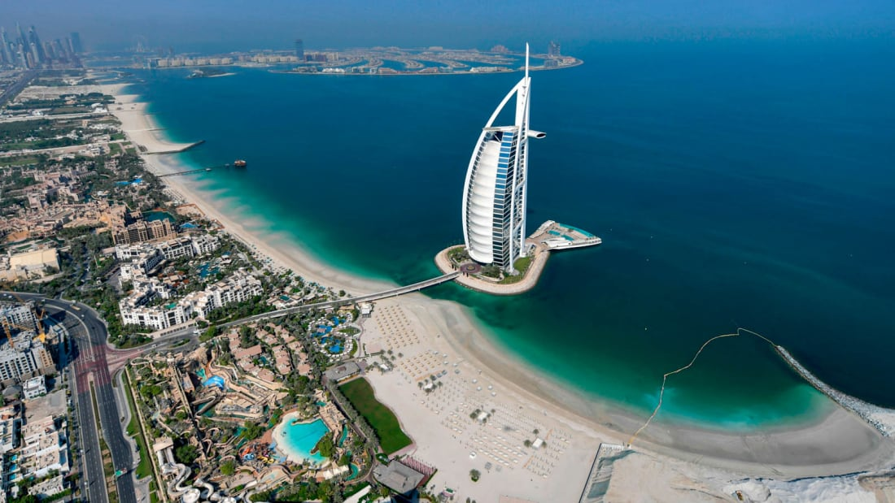

The United Arab Emirates consists of seven emirates.
1. Abu Dhabi :

Abu Dhabi is the capital and the second-most populous city of the United Arab Emirates (after Dubai). The
city of Abu Dhabi is located on an island in the Persian Gulf, off the Central West Coast. Most of the city and
the Emirate reside on the mainland connected to the rest of the country. As of 2020, Abu Dhabi's urban area had
an estimated population of 1.48 million, out of 2.9 million in the emirate of Abu Dhabi, as of 2016.
The
Abu Dhabi Investment Authority is headquartered in the city, and was the world's 3rd largest sovereign wealth
fund in 2020. Abu Dhabi itself has over a trillion US dollars worth of assets under management in a
combination of various sovereign wealth funds headquartered there.
Abu Dhabi houses local and federal government offices and is the home of the United Arab Emirates Government and
the Supreme Petroleum Council. The city is home to the President of the UAE, who is a member of the Al Nahyan
family. Abu Dhabi's rapid development and urbanization, coupled with the massive oil and gas reserves and
production and relatively high average income, have transformed it into a large, developed metropolis.
History
The area surrounding Abu Dhabi is full of archaeological evidence from historical civilizations, such as the Umm an-Nar Culture, which dates back from the third millennium BC. Other settlements were also found farther outside the modern city of Abu Dhabi, including the eastern and western regions of the Emirate.
Geography
The city of Abu Dhabi is on the southeastern side of the Arabian Peninsula, adjoining the Persian Gulf. It is
on an island less than 250 metres (820 ft) from the mainland and is joined to the mainland by the Maqta and
Mussafah Bridges. A third, Sheikh Zayed Bridge, designed by Zaha Hadid, opened in late 2010. Abu Dhabi Island is
also connected to Saadiyat Island by a five-lane motorway bridge.
Al-Mafraq bridge connects the city to
Reem
Island and was completed in early 2011. This is a multi-layer interchange bridge and it has 27 lanes which allow
roughly 25,000 automobiles to move per hour.
There are three major bridges in the project, the largest has
eight
lanes, four leaving Abu Dhabi city and four coming in.
Most of Abu Dhabi city is located on the island itself, but it has many suburban districts on the mainland, for
example, Khalifa City A, B, and C; Khalifa City Al Raha Beach;[23] Al Bahia City A, B, and C; Al Shahama; Al
Rahba; Between Two Bridges; Baniyas; Shamkha; AL Wathba and Mussafah Residential.
2. Dubai :
Dubai is a city and emirate in the United Arab Emirates known for luxury shopping, ultramodern architecture and a lively nightlife scene. Burj Khalifa, an 830m-tall tower, dominates the skyscraper-filled skyline.
Etymology
Many theories have been proposed as to origin of the word "Dubai". One theory suggests the word used to be the souq in Ba. An Arabic proverb says "Daba Dubai" ( meaning "They came with a lot of money." According to Fedel Handhal, a scholar on the UAE's history and culture, the word Dubai may have come from the word daba which means "to creep"), referring to the slow flow of Dubai Creek inland. The poet and scholar Ahmad Mohammad Obaid traces it to the same word, but to its alternative meaning of "baby locust" due to the abundance of locusts in the area before settlement.
History
The history of human settlement in the area now defined by the United Arab Emirates is rich, complex, and
points to extensive trading links between the civilisations of the Indus Valley and Mesopotamia, but also as far
afield as the Levant. Archaeological finds in the emirate of Dubai, particularly at Al-Ashoosh, Al Sufouh
and the notably rich trove from Saruq Al Hadid[24] show settlement through the Ubaid and Hafit periods, the Umm
Al Nar and Wadi Suq periods and the three Iron Ages in the UAE.
The area was known to the Sumerians as
Magan,
and was a source for metallic goods, notably copper and bronze.
The area was covered with sand about 5,000 years ago as the coast retreated inland, becoming part of the city's
present coastline.[26] Pre-Islamic ceramics have been found from the 3rd and 4th centuries.[27] Prior to the
introduction of Islam to the area, the people in this region worshiped Bajir (or Bajar).
After the spread
of
Islam in the region, the Umayyad Caliph of the eastern Islamic world invaded south-east Arabia and drove out the
Sassanians. Excavations by the Dubai Museum in the region of Al-Jumayra (Jumeirah) found several artefacts from
the Umayyad period
Establishment of modern Dubai
Dubai is thought to have been established as a fishing village in the early 18th century and was, by 1822,
a town of some 700–800 members of the Bani Yas tribe and subject to the rule of Sheikh Tahnun bin Shakhbut of
Abu Dhabi.
In 1833, following tribal feuding, members of the Al Bu Falasah tribe seceded from Abu Dhabi and established
themselves in Dubai. The exodus from Abu Dhabi was led by Obeid bin Saeed and Maktoum bin Butti, who became
joint leaders of Dubai until Ubaid died in 1836, leaving Maktum to establish the Maktoum dynasty.
Dubai signed the General Maritime Treaty of 1820 with the British government along with other Trucial States,
following the British campaign in 1819 against the Ras Al Khaimah. This led to the 1853 Perpetual Maritime
Truce. Dubai also – like its neighbours on the Trucial Coast – entered into an exclusivity agreement in which
the United Kingdom took responsibility for the emirate's security in 1892.
3. Sharjah :

Sharjah is the third-most populous city in the United Arab Emirates, after Dubai and Abu Dhabi, forming part of the Dubai-Sharjah-Ajman metropolitan area.
History
Sharjah was historically one of the wealthiest towns in this region with a settlement in existence for over
5000 years.In the early 18th century, the Qawasim clan (Huwayla tribe) established itself in Sharjah, c.1727
declaring Sharjah independent. On 8 January 1820, Sheikh Sultan I signed the General Maritime Treaty with
Britain, accepting a protectorate to keep the Ottoman Turks out.
Like four of its neighbours, Ajman, Dubai,
Ras
Al Khaimah, and Umm Al Quwain, its position on the route to India made it important enough to be recognised as a
salute state (be it of the lowest class: 3 guns).
In 1829, English author and traveler James Silk Buckingham described Sharjah as such:
"In the course of the night, we had passed the port of Sharjee, on the Arabian coast, which is not an island, as
laid down in Niebuhr's chart, the only one in which it is inserted; but a small town, on a sandy beach,
containing from five to six hundred inhabitants.
It is situated in lat. 25° 34' north, and lies eleven
leagues
south-west of a small island, close to the shore, called Jeziret-el-Hamra; and three leagues south-west of
Sharjee is Aboo Hayle."
By the turn of the 20th century, Sharjah extended inland to the area now known as Wasit Suburb, the area between
the city and Dhaid being under the control of the tribes of the interior. With some 15,000 inhabitants, Sharjah
had some 4 or 5 shops in Layyah and a bazaar of some 200 shops in Sharjah proper.
Districts and Landmarks
Sharjah is the third largest city in the United Arab Emirates after Dubai and Abu Dhabi.[16] The palace of the
ruler of the Emirate of Sharjah, His Highness Sheikh Dr. Sultan bin Muhammad Al-Qasimi, is located about 20
kilometres (12 mi) southeast of the city.
The city of Sharjah overlooks the Persian Gulf and has a population of over 800,000 (2008). It contains the main
administrative and commercial centres together with an array of cultural and traditional projects, including
several museums covering areas such as archaeology, natural history, science, arts, heritage, Islamic art and
culture. Distinctive landmarks include two major covered souks, reflecting Islamic design, and a number of
recreational areas and public parks such as Al Montazah Fun Park and Al Buheirah Corniche. The city is also
notable for its numerous elegant mosques.
Establishment of modern Sharjah
Sharjah is thought to have been established as a fishing village in the early 18th century and was, by 1822,
a town of some 700–800 members of the Bani Yas tribe and subject to the rule of Sheikh Tahnun bin Shakhbut of
Abu Dhabi.
In 1833, following tribal feuding, members of the Al Bu Falasah tribe seceded from Abu Dhabi and established
themselves in Dubai. The exodus from Abu Dhabi was led by Obeid bin Saeed and Maktoum bin Butti, who became
joint leaders of Dubai until Ubaid died in 1836, leaving Maktum to establish the Maktoum dynasty.
Dubai signed the General Maritime Treaty of 1820 with the British government along with other Trucial States,
following the British campaign in 1819 against the Ras Al Khaimah. This led to the 1853 Perpetual Maritime
Truce. Dubai also – like its neighbours on the Trucial Coast – entered into an exclusivity agreement in which
the United Kingdom took responsibility for the emirate's security in 1892.
4. Ajman:
Ajman is the fifth-largest city in UAE after Dubai, Abu Dhabi, Sharjah and Al Ain. Located along the Persian Gulf, it is engulfed by the larger emirate of Sharjah in territory
History
Al Bu Kharaiban Nuaimi rule in Ajman started in 1816, when Sheikh Rashid bin Humaid Al Nuaimi and fifty of his followers took the coastal settlement of Ajman from members of the Al Bu Shamis Nuaimi tribe in a short conflict. It wasn't until 1816 or 1817, however, that the Ajman fort finally fell to Rashid's followers and his rule was endorsed by the powerful Sheikh of neighbouring Sharjah and Ras Al Khaimah, Sheikh Sultan bin Saqr Al Qasimi. On 8 January 1820, following the sack of Ras Al Khaimah by a British force led by Sir W.G. Keir, Sultan bin Saqr signed the General Maritime Treaty with the United Kingdom on 4 February 1820, followed on 15 March by Rashid bin Humaid at Falaya Fort.
Population
The city has more than 90% of the population of the emirate. The area runs directly into the city of Sharjah along the coast to the south-west, which in turn is adjacent to Dubai, forming a continuous urban area.
Commercial
Ajman is home to the Ruler's office, companies, commercial markets, and about 50 international and local retail shops. Banking interests include: Emirates National Bank of Dubai, Ajman Bank, Arab Bank PLC, Bank Saderat Iran, and Commercial Bank of Dubai. Ajman is also home to fishing industry & Seafood Importers/Exporters in UAE. Shopping malls include Ajman China Mall and City Centre Ajman.
5. Umm Al Quwain :
Umm Al Quwain is located on the peninsula of Khor Al Bidiyah, with the nearest major cities being Sharjah to
the southwest and Ras Al Khaimah to the northeast.
This article is about the city. For the eponymous emirate, see Emirate of Umm Al Quwain.
Umm Al Quwain is the capital and largest city of the Emirate of Umm Al Quwain in the United Arab Emirates.
The city is located on the peninsula of Khor Al Bidiyah, with the nearest major cities being Sharjah to the
southwest and Ras Al Khaimah to the northeast. There are mangroves outside the city along the coast, with the
local economy being largely fishing.[2]